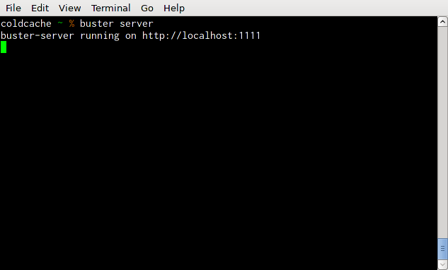
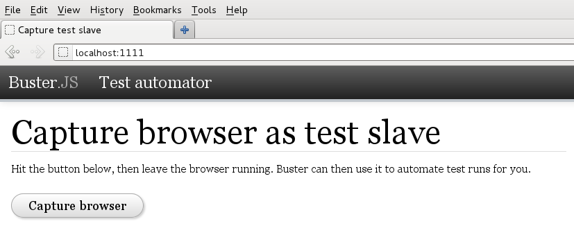
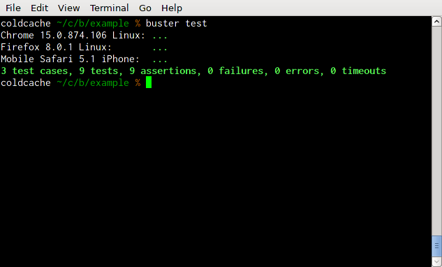
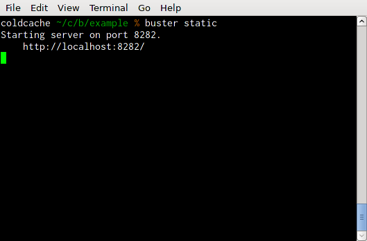
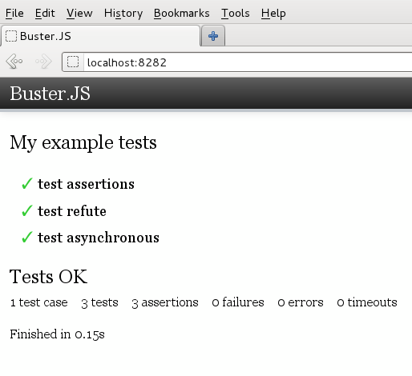

Browser testing
Buster.JS offers multiple ways of running your tests in browsers. This document describes three ways, ranging from simple setup to most useful (if that's a scale).
Using an HTML scaffold
The simplest way to try Buster is to copy the following code, save it to a file and run it in a browser:
<!DOCTYPE html PUBLIC "-//W3C//DTD HTML 4.01//EN"
"http://www.w3.org/TR/html4/strict.dtd">
<html>
<head>
<meta http-equiv="content-type" content="text/html; charset=utf-8">
<title>strftime</title>
</head>
<body>
<script type="text/javascript" src="http://busterjs.org/releases/latest/buster-test.js"></script>
<script type="text/javascript" src="http://busterjs.org/examples/strftime/strftime.js"></script>
<script type="text/javascript" src="http://busterjs.org/examples/strftime/strftime-test.js"></script>
</body>
</html>Go ahead, try it.
If you use Git, you can clone this
example to your machine:
git clone git://gist.github.com/1904218.git gist-1904218
Note: If you opt for downloading the script locally, remember to get CSS-file too.
When using the pre-built library, there's no installation, but you also miss out on much of the automation sweetness.
Running with buster server
Inspired by JsTestDriver, Buster.JS can automate browsers seamlessly and provide feedback anywhere you want, making running your tests in actual browsers easy and painless. Hell, it even makes it fun.



Running with buster static
In the cases where you need a simpler method for running tests, but don't care for the manual HTML scaffold, Buster.JS can serve the scaffold for your based on your configuration.


Running headless with PhantomJS
This feature has not yet landed in the beta.